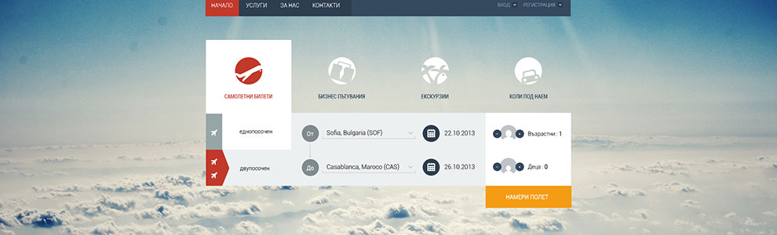

网络活动，社交性植入策略 ——社会化语境下，让消费者说出喜好
2013-08-19

消费者为什么要看这些东西呢？它们提供了消费者什么利益？
社会化语境下，让消费者说出喜好。
社会化媒体的兴起，包括QQ等聊天工具，娱乐性SNS，人人、校园等人群细分总集，微博，微信，陌陌等，无论是网络平台还是移动网络平台，一系列的媒体提 供了让消费者自说其话的平台，人们在上面发表各种意见，可能针对这个意见，会有更多的声音出来，有赞成、有反对，也许他们站在了不同的角度，代表不同 属性、不同阶段的用户群体。如果是在一个群组中，活跃用户的意见，可能会影响到后来提出意见者的思想，并导致他们盲从。这些庞大的社会语言，带给品牌 营销者大量的、前所未有的、关于消费者的详细数据。作为数字营销人员，我们会从一个网络消费者的行为路径描述出具化的消费形象，并针对这个消费形象制 定更为合适的营销战略。
社交性媒体无疑是与这个具化的、消费形象说话的最好路径。
如以下的案例，具化的消费形象能让我们知道，他是个移动的年轻用户，对新的优惠活动有积极兴趣。
贵州电信的合作，利用的就是移动社交平台，针对贵州地区的APP社交游戏，生活应用进行植入投放。在层层筛选，精准定向到目标受众，推送到受众面前的， 不再是硬绑绑的广告，而是实实在在的优惠资讯。此次投放中，获得了的高点击率，无疑为我们社会化媒体投放策略打上一支强心针，从实践中检验策略的可行 性。深入了解消费者需求，激发消费者参与度，要达到这一点目的，要求的已经远远超越传统的网络投放的思维和方法。通过对于用户接触到的各个接触点的分 析监测，然后进行全局性，系统性的分析，优化数字营销策略，让消费者说出品牌喜好。
社会化语境下，让消费者说出喜好。
社会化媒体的兴起，包括QQ等聊天工具，娱乐性SNS，人人、校园等人群细分总集，微博，微信，陌陌等，无论是网络平台还是移动网络平台，一系列的媒体提 供了让消费者自说其话的平台，人们在上面发表各种意见，可能针对这个意见，会有更多的声音出来，有赞成、有反对，也许他们站在了不同的角度，代表不同 属性、不同阶段的用户群体。如果是在一个群组中，活跃用户的意见，可能会影响到后来提出意见者的思想，并导致他们盲从。这些庞大的社会语言，带给品牌 营销者大量的、前所未有的、关于消费者的详细数据。作为数字营销人员，我们会从一个网络消费者的行为路径描述出具化的消费形象，并针对这个消费形象制 定更为合适的营销战略。
社交性媒体无疑是与这个具化的、消费形象说话的最好路径。
如以下的案例，具化的消费形象能让我们知道，他是个移动的年轻用户，对新的优惠活动有积极兴趣。
贵州电信的合作，利用的就是移动社交平台，针对贵州地区的APP社交游戏，生活应用进行植入投放。在层层筛选，精准定向到目标受众，推送到受众面前的， 不再是硬绑绑的广告，而是实实在在的优惠资讯。此次投放中，获得了的高点击率，无疑为我们社会化媒体投放策略打上一支强心针，从实践中检验策略的可行 性。深入了解消费者需求，激发消费者参与度，要达到这一点目的，要求的已经远远超越传统的网络投放的思维和方法。通过对于用户接触到的各个接触点的分 析监测，然后进行全局性，系统性的分析，优化数字营销策略，让消费者说出品牌喜好。
上一篇：关于传悦网站减少根本的话想刘克军
上一篇：关于传悦网站减少根本的话想刘克军